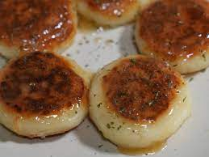

Honey Butter Potato Mochi

Description
Potatoes are one of the most versatile ingredients in the kitchen- French Fries, chips, mashed- but I'll bet you've never tried to make mochi out of them!
Try this wonderful, simple recipe for cheese-filled potato mochi that will leave your mouth watering!
Ingredients
- 1 large potato
- 1 tbsp sugar
- 5 tbsp room temperature butter
- 2 tsp salt
- 1/2 cup of glutinous rice flour
- Mozzarella cheese
- 3-4 tbsp honey
Steps
- Slice your potato into large, even discs.
- Simmer until tender, then mash.
- Mix your mashed potato with 1 tbsp butter, 1 tsp salt, and the rice flour.
- Knead the mixture until it forms a nice, smooth "dough."
- Take a small ball of the dough and place some mozzarella inside.
- Add some oil to a frying pan and fry both sides of your mochi balls on medium heat.
- Melt the rest of the butter, salt, and honey together into a sauce and drizzle it over your mochi.